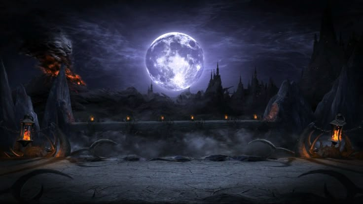
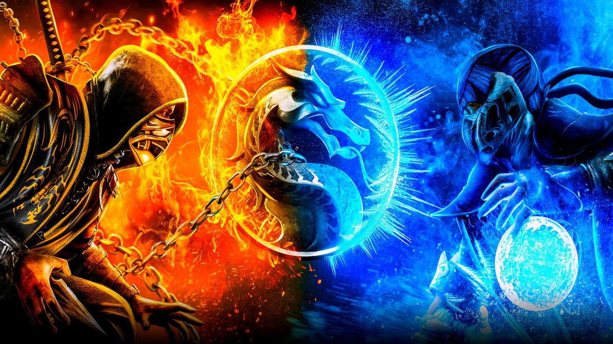
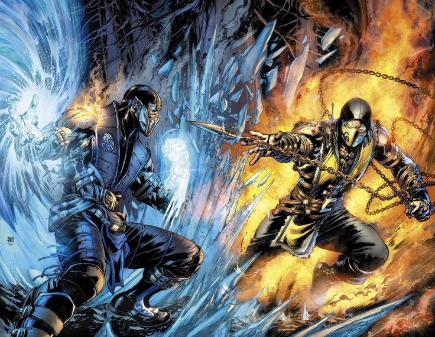

Arena Mortal Kombat
Prepare-se para lutar na arena onde lendas são forjadas e heróis caem!
Em Mortal Kombat, cada duelo é uma prova de força, reflexo e estratégia. Escolha seu guerreiro, domine seus combos e enfrente adversários em batalhas cheias de ação e adrenalina.
Mostre quem manda na arena — apenas os mais habilidosos alcançam a vitória... e a glória final!

Saga mortal Kombat
A saga Mortal Kombat começou em 1992 e se tornou uma das franquias de luta mais famosas do mundo. A história gira em torno de um torneio lendário entre guerreiros da Terra e de outros reinos, onde o destino do planeta está em jogo.
Com personagens icônicos como Scorpion, Sub-Zero, Liu Kang e Raiden, a série mistura artes marciais, poderes místicos e batalhas épicas.
Ao longo dos jogos, a trama evoluiu com reboots, alianças e traições, mantendo sempre o mesmo espírito: lutar pela honra, vingança e sobrevivência.

Personagens poderes
"🔥 Principais Personagens de Mortal Kombat e seus Poderes
🦂 Scorpion (Hanzo Hasashi)
Poderes: Manipulação do fogo infernal, teletransporte e uso de correntes com lâmina (“Get over here!”).
Origem: Guerreiro do clã Shirai Ryu, renascido como espectro em busca de vingança contra Sub-Zero.
❄️ Sub-Zero (Bi-Han / Kuai Liang)
Poderes: Controle do gelo, podendo congelar inimigos, criar armas e escudos de gelo.
Origem: Ninjas do clã Lin Kuei, jurados rivais dos Shirai Ryu.
⚡ Raiden
Poderes: Deus do trovão, com domínio sobre relâmpagos, teletransporte e voo.
Origem: Protetor do reino da Terra (Earthrealm).
🐉 Liu Kang
Poderes: Artes marciais aprimoradas com energia de fogo e dragões espirituais.
Origem: Monge Shaolin e campeão do torneio Mortal Kombat.
🕶️ Johnny Cage
Poderes: Energia verde mística, golpes rápidos e carisma de astro de cinema.
Origem: Ator de filmes de ação que virou verdadeiro herói.
💥 Sonya Blade
Poderes: Dispositivos tecnológicos, energia explosiva e alta habilidade em combate corpo a corpo.
Origem: Major das Forças Especiais da Terra.
☠️ Shang Tsung
Poderes: Feiticeiro capaz de roubar almas e se transformar em outros lutadores.
Origem: Servo de Shao Kahn e manipulador dos torneios.
👑 Shao Kahn
Poderes: Força sobre-humana, magia sombria e domínio sobre Outworld.
Origem: Imperador tirano que busca conquistar todos os reinos.
🔥 Kitana
Poderes: Leques de aço letais e ataques com energia azul.
Origem: Princesa de Edenia, treinada desde jovem para lutar.
💀 Mileena
Poderes: Velocidade, agilidade e mordidas ferozes com dentes monstruosos.
Origem: Clone de Kitana criado por Shang Tsung.
🌪️ Kung Lao
Poderes: Chapéu afiado mágico, teletransporte e ataques com energia espiritual.
Origem: Monge Shaolin e descendente do herói original de Mortal Kombat.
🧛♂️ Noob Saibot
Poderes: Controle das sombras e invocação de clones sombrios.
Origem: O Sub-Zero original, renascido das trevas.